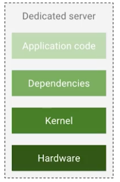
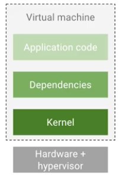
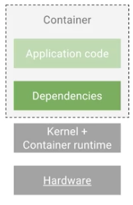

Overview
- 컨테이너 소개.
- 쿠버네티스 소개.
- 클러스터, 노드, 폿 소개.
- 배포 및 롤링업데이트 소개.
- 연속적 배포 소개.
컨테이너
컨테이너?
인류는 여러가지 물건을 효율적으로 옮기기 위해 컨테이너 라는 유닛을 만들었다. 어떤 물건이던 컨테이너 안에 넣으면 이후는 획일화된 이동 프로세스를 사용해서 옮겨 간다. 위의 개념을 IT에 도입해보자.
히스토리
- 앱을 뛰우는대 크게 4개의 의존성이 있었다. 의존성을 줄여보자.
- 예전에는 특정 물리 서버에 서버를 뛰었다.
(1)
- 하드웨어를 추상화 하면서 남은 윗부분은 VM 이라고 불렀다.
(2)
- 커널을 추상화 하면서 남은 윗부분을 컨테이너라고 부르자.
(3)
장점
- 동일한 코드가 환경에 영향을 받지않고 어디서든 동작한다.
- dev, test, production 의 모든 환경에서.
- 물리적머신, 클라우드, vm 등 모든 환경에서 동작한다.
- 앱을 컨테이너라는 유닛으로 묶음으로 인해 획일화된 프로세스 사용이 가능해 진다.
- 배포 속도, 개발 속도 등이 빨라진다.
- 마이크로 서비스로 가는 기반을 제공한다.
- 독립적인환경
- 망하면 다시 컨테이너만 뛰우면된다.
다커
물건을 쉽게 옮기기 위해 컨테이너라는 개념을 만들었다. 이 개념을 IT에 들고와보자. 앱을 컨테이너로 묶는다고 생각하자. 그러면 해당 컨테이너를 사용하는 환경(싣고 내리는)이 필요하다. 이 환경이 다커이며 docker 는 부두 노동자 라는 뜻을 가지고 있다.
상세 개념들
컨테이너를 IT 쪽에 도입하면 아래와 같은 유비가 가능하다. - 물건을 컨테이너에 싣는다. -> 앱을 컨테이너로 패키징한다. - 패키징이라고 한다. - 컨테이너를 생산자가 소비자에게 배송한다. - 컨테이너를 특정 항구로 이동시킨다. -> 컨테이너를 레지스트리로 이동시킨다. - 공용 저장소를 레지스트리라고 한다. - 공용 저장소로 올리는것을 푸시라고 한다. - 컨테이너를 소비자가 가져온다. -> 특정 레지스트리에서 컨테이너를 가져온다. - 공용 저장소에서 다운 받는다고 한다. - 컨테이너를 열어 물건을 꺼낸다. -> 앱을 실행한다. - 컨테이너를 실행 한다고 한다.
용어 정리
- 이미지: 앱을 실행시킬 준비가되어 있는 환경.(파일 모음)
- 컨테이너: 해당 이미지를 실행 시켜 메모리로딩한 상태.(프로세스)
다커 연습
개괄
- 다커 인스톨.
- 이미지 패키징.
- 컨테이너 로컬 실행.
- 이미지를 레지스트리에 배포.
- 이미지를 레지스트리에서 가져옴.
인스톨
- install
- OS별로 다운 후 실행
패키징
- Docker
# 베이스 이미지.
FROM python:2.7-slim
# 컨테이너 시작 패스
WORKDIR /app
# 로컬 데이터를 이미지로 복사. (패키징)
COPY . /app
# 컨테이너 시작시 실행될 명령어
CMD ["python", "app.py"]
- Command
- 위의 파일을 아래 명령어로 빌드하게 되면 빌드된 이미지는 로컬 레지스트리에 적제됨
docker build --tag=helloapp .
컨테이너 로컬 실행
docker run helloapp
이미지를 레지스트리에 배포.
docker push username/repository:tag
이미지를 레지스트리에서 가져옴.
docker pull username/repository:tag
Link
- 1,2,3 이미지는 google kubernetes engine에서 발췌 했습니다.